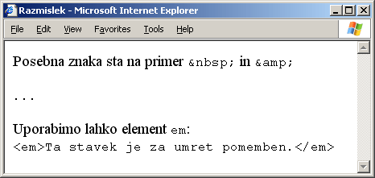

Utrjujemo snov 2. poglavja
Vprašanja z izbiro
- Kako pravilno zapišemo element br?
- <br>
- <br />
- <br /br>
- <br \>
- Kako pravilno zapišemo element q?
- <q>vsebina</q>
- <q vsebina />
- <q vsebina /q>
- <q vsebina \>
- Kateri od naslednjih elementov bo v brskalniku povzročil prelom vrstice?
- q
- kbd
- em
- pre
- Katerega od naslednjih elementov uporabimo, če želimo poudariti besedilo?
- q
- kbd
- em
- pre
- Katerega od naslednjih elementov uporabimo za navajanje besedila?
- q
- kbd
- em
- p
- Katerega od naslednjih elementov uporabimo za prikaz tipkanega besedila?
- q
- kbd
- em
- p
- Kateri od naslednjih elementov je prazen?
- br
- q
- em
- p
- Kateri od naslednjih elementov je blokovski?
- strong
- q
- em
- p
- Katerega od naslednjih elementov ne smemo vstaviti v element q?
- br
- em
- strong
- blockquote
- Kako zapišemo poseben znak za nelomljivi presledek?
-
- <nbsp>
- <nbsp />
- /nbsp
- Katera od naslednjih vrstic bo povzročila, da se v brskalniku pokaže
besedilo B R E Z P A N I K E !?
- <kbd>B R E Z P A N I K E !</kbd>
- <pre>B R E Z P A N I K E !</pre>
- <p>B R E Z P A N I K E !</p>
- <q>B R E Z P A N I K E !</q>
- S kakšno izvorno kodo v brskalniku dosežemo izpis B R E Z P A N I K E !?
- <kbd>B R E Z P A N I K E !</kbd>
- <kbd>B R E Z <nbsp /> P A N I K E !</kbd>
- <kbd>B R E Z P A N I K E !</kbd>
- <kbd>B R E Z P A N I K E !</kbd>
V razmislek
Napišite kodo, ki bo v brskalniku povzročila naslednji izpis:
